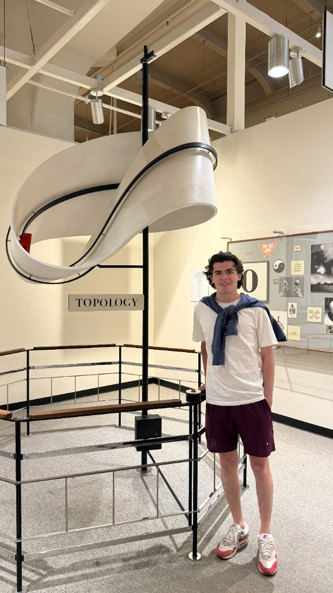

About me
Hi everyone! My name is Alex Lavallee, and I'm an Undergraduate Pure Mathematics student at the University of Waterloo. Feel free to poke around my webpage to learn more about who I am, and what I like to do with all my time!
Education
I'm an Undergraduate Pure Mathematics student at the University of Waterloo. My coursework varies greatly, however I have an affinity for analysis, topology, and abstract algebra.
Outside of my coursework, I study operator algebras, harmonic analysis, and non-commutative geometry. I'm currently reading up on crossed products of C*-algebras, and operator spaces/systems.
From July to November, I will be studying at the Queensland University of Technology in Australia for an exchange term. While I'm there, I will be exploring physics courses, and continuing my readings in C*-algebras.
Other Math Facts
In my free time, I volunteer at the University of Waterloo to give back to the mathematics community and help make mathematics a welcoming space for everyone. Notably, I've been the President of the Mathematics Society of the University of Waterloo twice, I'm currently an Editor for mathNEWS, and come this fall, I will be the Mathematics Undergraduate Senator; representing the student body on all matters concerning academic governance of the university as a whole.
Fun Facts
In my free time I like to scuba dive, rock climb, read, play a variety of intramural sports, and enjoy other activities that I tend to land on from time to time. I currently have twelve logged dives, my favourite of which took place at the Catalina aquarium off of the coast of the Dominican Republic. As for rock climbing, I haven't had a chance to venture far but you'll often find me at the local climbing gyms of Waterloo, or occassionally at the Glenn in Niagara. My intramural sport of choice is hockey, and my favourite book of all time is Kitchen Confidential by Anthony Bourdain, although I will often wax poet about other books.